) to add the behavior to the object. Change the setting in the Shooter Controls to this:
) to add the behavior to the object. Change the setting in the Shooter Controls to this:This article was posted to the TDN by Steven A. Hine.
First I'd like to acknowledge the person who wrote the aStar code. This is an awesome resource. Thanks Phil. After trying to implement this in a few games I finally figured it out. Here is the easiest way to use aStar.
First create a new project called aStarFollowing, add the puzzle template, and check the copy executable box.
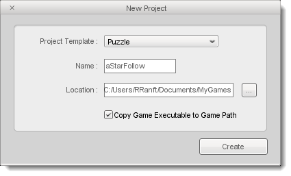
Next we will need to add some behaviors to make the player and camera move. (You can get the behaviors from the Shooter game demo included with Torque 2D.) Simply copy the behaviors from the Shooter\game\behaviors folder into the \aStarFollowing\game\behaviors folder.
The next step to do is to reload T2D's editor. This can be done by going to the project menu and clicking 'reload project'. This will add the new behaviors to the editor.
Now the aStar files need to be added to the scripts folder. They should be in T2D's installed folder: \Program Files\Torque\TorqueGameBuilder-1.7.5\games\AStarDemo\game\gameScripts. Copy the files aStarActor.cs and aStarPath.cs into the \aStarFollowing\game\gameScripts folder.
All files are setup except the scripts we need to create. The next section will set up the scene for interaction with the player and AI.
aStar uses a tile map to process path calculations. Each tile in the map is a location in the game world that the AI can either be on or have to move around. This is set up is by using the tile editor to create values for each tile in the map. First drag a new newlayer object into the level area from the tile maps tab. Change the tile count x/y to 30 and tile size x/y to 5. Then press the size object to layer button to show all the tiles.
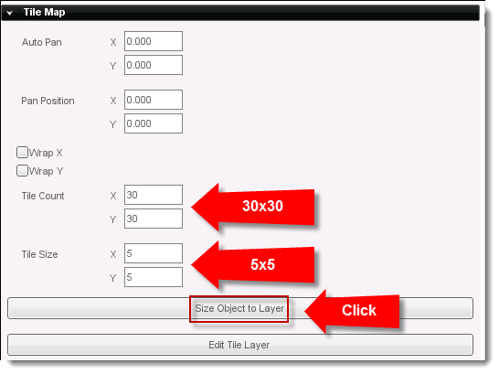
To add tiles to the map press the tile editing tab to reveal the edit controls:
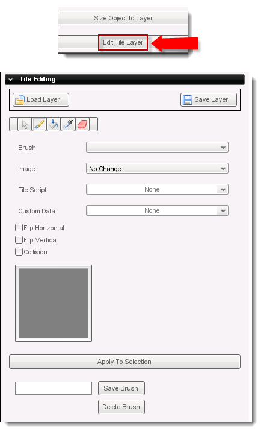
First, under image find the puzzleBlock_1ImageMap. Then under custom data delete 'none' and type in 10. This is where aStar will find the value to rate each tile. Each tile in the map does not have to be done. Only the tiles that need to have a value higher than 0 will have to be done. Check the Collision box so that the player can't pass through our walls.
A value of 0 means that the AI can move on to the tile, higher values tell aStar to move around the tile. 10 is the highest value and impassable. The AI will not be able to use this tile. When a tile's custom data is set a circle with a 'C' in it will be put in the top left hand corner of the tile.
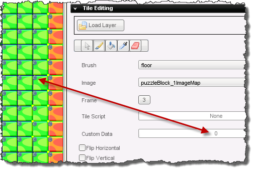
After setting up the tile, save the tile setup as a Brush. Here are the steps again:
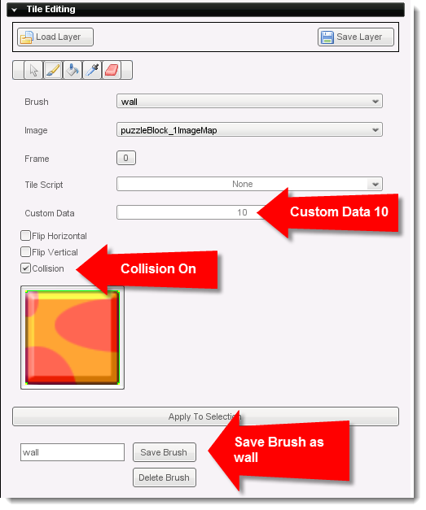
Next, create a floor brush using frame 3, Custom Data set to 0 and Collision off.
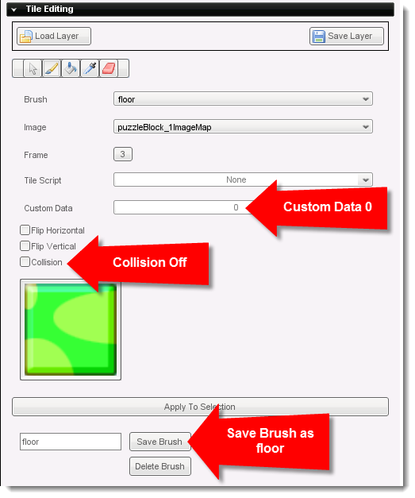
Now, select your wall brush and paint walls, then select your floor brush and use the Flood Fill tool to paint the floor.
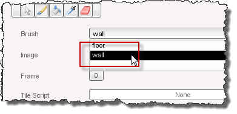
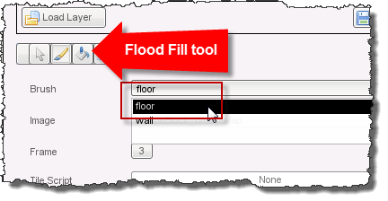
Build a map that resembles the following:
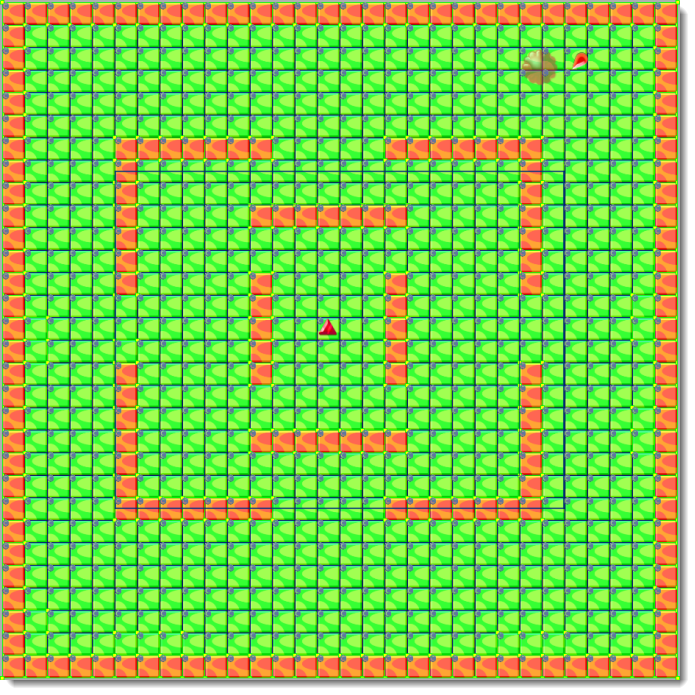
Lastly, scroll down to the 'scripting' tab and enter 'pathLayer' into the class field. This hooks the tile layer with the aStar $PathGrid global variable.
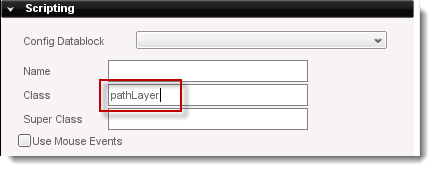
To see how well aStar works, a player will be added with keyboard controls of left, right, up, and down. Press the create button to show the 'Static Sprites' tab. Choose any image from the tab and drag it into the scene into the tile layer. With this image still selected select the Edit tab and open the 'Behaviors' rollout. Click the drop-down to open the list of available behaviors. This is what it should look like:
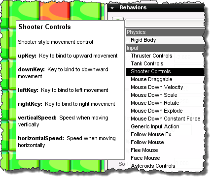
The behaviors we copied from the Shooter project should appear. If they are not there, check to see if they are in the correct folder (/'project name'/behaviors/) and reload the project. When asked to save the project, save it as start.t2d.
Select Shooter Controls and click the green 'plus' button (
) to add the behavior to the object. Change the setting in the Shooter Controls to this:
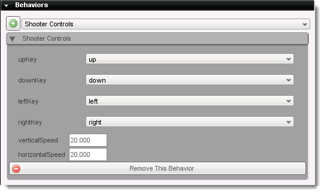
If the scene was played now, the keyboard arrows would move the object around the screen. The controls are now set up.
Open the Scripting rollout and name your player object 'thePlayer', then set the Class attribute to 'playerClass'. This will let us mount the camera to the player as well as handle a few other things in script.
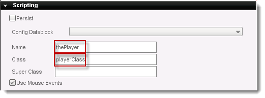
Now the player is set up. Next we'll add the AI and scripts to set up the aStar movement.
First choose a Static Sprite and drag it into the scene inside the tile map. It should be put between the blocks in the map. Open up the scripting tab and enter this information: Name: pAI Class: AIClass Super Class: aStarActor.
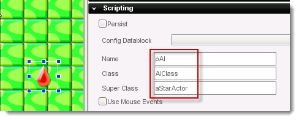
It is always good to give object a unique name. The class will be used to add some more functionality to the object through script. Finally the super class aStarActor will add all the functions need to give control to the aStar system.
While we're here, let's give the enemy a Face Object behavior and have it face the player object:
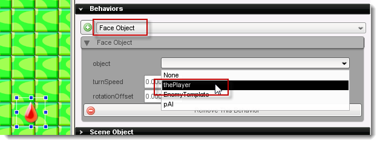
At this point the level can be saved as 'start.t2d' and T2D closed.
aStar works by making each tile in the tile map a node that the AI can move to. Of course, whether or not the tile is used depends on the custom data value that it has. All the blocks we added earlier have a value of 10, so they are not usable and aStar will move around them. It is assumed that any tile that does not have its custom data set has a value of zero.
In this picture the AI moves in the path shown by the arrows , because it is the shortest path of tiles that are open.
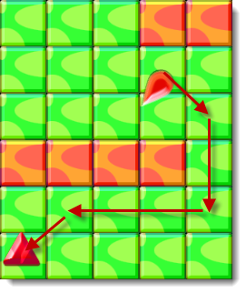
If you need a more in depth understanding of aStar, there are many resources on the internet as well as books on the subject. All of these calculations happen in engine code as they are set up and requested by the game scripts.
To get aStar to work, open up a new notepad file and type in this code:
function AIClass::onLevelLoaded(%this, %sceneGraph)
{
%this.moveSpeed = 10;
%this.enableUpdateCallback();
}
function AIClass::onUpdate(%this)
{
%this.startPath(%this.getPosition(), $thePlayer.getPosition());
}
First the onLevelLoaded function is used to set up the moveSpeed variable. This variable is used to tell aStar how fast the AI should move to the next tile or node in the tile map. Then the onUpdate callback is enabled, so that the player and AI position can be passed to aStar. aStar will use these to create the path. Next, type in this code below the onUpdate function.
function AIClass::startPath(%this, %start, %dest)
{
// find our path
%this.pathGrid = $pathGrid;
%newPath = %this.findDestinationPath(%dest);
if (isObject(%newPath) )
{
%this.currentPath = %newPath;
%this.followAStarPath(%newPath);
activeActorsSet.add(%this);
}
else
{
%this.isFrustrated("noPath");
}
}
This code comes from the aStar demo in the sample games distributed with T2D. First a function called startPath is declared for the AIClass. In it we pass a start destination (%start) and a end destination (%dest). Next a pathGrid object is created that points to the aStarPath tileLayer from the level. A %newPath is created by calling aStarActor findDestinationPath. This function was added to the AI by the super class. It tries to find a path to the destination passed to the startPath function.
If a newPath is created, the code continues through the 'if' statement. The currentPath is updated with the newPath. Next the AI is told to follow the path by calling followAStarPath from the aStarActor supr class. Lastly, this object is added to the activeActorsSet, which will update the path if the game world has changed.
When a path is not found to the object, the else statement is executed. The isFrustrated function is called, which states there is no path. The isFrustrated function can be changed to create different behaviors. The most obvious is when a path was tried several times with no conclusion. By keeping count of how many tries were made, the AI's last try could tell it to do some other action. These actions could be to wait, random directions, or give up. Save the file as 'Actor.cs'.
Create another new file and enter the following code:
function playerClass::onLevelLoaded(%this, %scenegraph)
{
$thePlayer = %this;
%this.class = playerClass;
$thePlayer.setCollisionMaxIterations(2);
%force = 20;
sceneWindow2D.mount($thePlayer, "0 0", %force, true);
// register with our possible destinations list
if (!isObject(DestinationSet) )
{
$targets = new SimSet(DestinationSet);
}
DestinationSet.add(%this);
}
This sets up a global $thePlayer variable that we can use to access the player from anywhere in our scripts. It also keeps the collision detection system from bogging the system down by setting the maximum iterations to 2. This basically limits the processing done when your player object collides with one of your wall tiles. Then it mounts the camera to the player so that we can watch ourselves wander about our level. Finally, it puts our player on the destination list for the aStarActor objects in the game so that they will follow us. Save this file as 'player.cs'.
Before any of the above code will run, T2D needs to be told to compile the new file as well as aStarActor and aStarPath. Add this code to the main.cs file in the 'game' directory of the project. It goes below the 'Exec game scripts' line::
exec("./gameScripts/aStarActor.cs");
exec("./gameScripts/aStarPath.cs");
exec("./gameScripts/actor.cs");
exec("./gameScripts/player.cs");
These lines should be self explanatory. Save the file and close notepad. At this point the scene can be run. Open up T2D and run the scene. The AI should chase the player around the scene avoiding the blocks in the tile map.
After this basic coverage of the A-Star pathfinding system hopefully you are now ready to set up and use it in your games. Additionally, in this post Kevin Hawkins adds line-of-sight calculation to the existing A-Star pathfinding system.